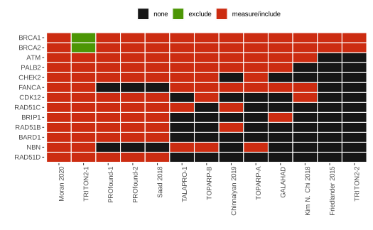

Sysrev users assign millions of labels to documents. The rsr package let’s you access and analyze that data. This demo shows how to access data from a review of prostate cancer biomarkers sysrev.com/p/81395.
get_answers_list(81395) organizes data from the review (p/81395) into a list of tables.
tbls <- get_answers(81395) |> list_answers()
#> list(basic=<tbl>,biomarker=<tbl>,...)The basic table links articles (eg. aid 1781738) to basic label data (logical, string, category). In this project, a basic label describes article trial identifiers (eg NCT01682772):
tbls$basic |>
mutate(nct=unlist(`NCT Trial ID`)) |>
select(aid,nct)
#> aid nct
#> 1 11781750 NCT01682772
#> 2 11781738 NCT02854436The other named values in get_answer_list are group labels, which are themselves tables. Here, the biomarker table describes which trials evaluated which genes.
tbls$biomarker |>
mutate(biomarker.name=unlist(biomarker.name)) |>
select(aid, biomarker.name)
#> aid biomarker.name
#> 1 11781738 BRCA1
#> 2 11781738 BRCA2 Extracted tables can be joined by article aid. Here, joined basic/biomarker tables link trials and biomarkers. ggplot2::geom_tile can then quickly visualize which trials use which biomarkers.
join.tb = tbls$basic |>
inner_join(tbls$biomarker,by="aid")
# ggplot(join.tb,
# aes(x=bmkr, y=study, fill=elig)) +
# geom_tile() + …
Now you know how to get open access review data on sysrev. Check out the rsr reference for more documentation.